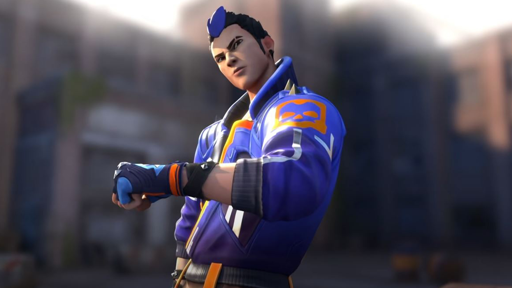

Ability 1(bait)-This ability has 2 charges.1 charge costs 100 creds.These are footsteps that are similar to a players footsteps.You can make out the difference between the fake footsteps and a players footsteps.But most of the time people get baited by this ability.You can place this ability and activate it whenever you want.
Ability 2(stun)-This ability has 2 charges as well.1 charge costs 200 creds.This is a flash similar to reyna,phoenix.This flash is activated only when it is bounced off of a wall or a structure.You cannot throw this in the air and expect it to flash.The flash duration is for 2 seconds.You can use this flash to take agressive peak anad get easy frags.
Ability 3(gatecrash)-This ability has 1 charge and it is free.This ability is a orb that can be placed or u can make it move.It is a teleportation orb.When u press the e key after placing ur gatecrash orb,u get teleported to the place ur orb is and this can be used for amazing outplays.The duration of the orb staying there or moving is 30 seconds.It gets replenished after 30 seconds of its use.You can use this for flanking on enemies or using it aggressively.
Ultimate-When u activate ur ultimate,u go into a state that makes u invisible unless the enemy comes to certain distance from you and it makes u a little faster.But you can't shoot guns or plant thee spike,defuse the spike.U can pair the gatecrash well with this ultimate as u can use it while using the ultimate.U can use this ultimate to get info and kill or run and push with ur teammates.U can place the gatecrash orb somewhere safe and get intel and come back to ur team and then push.